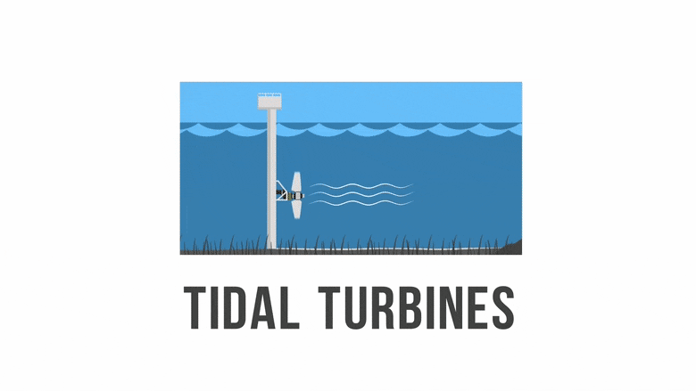
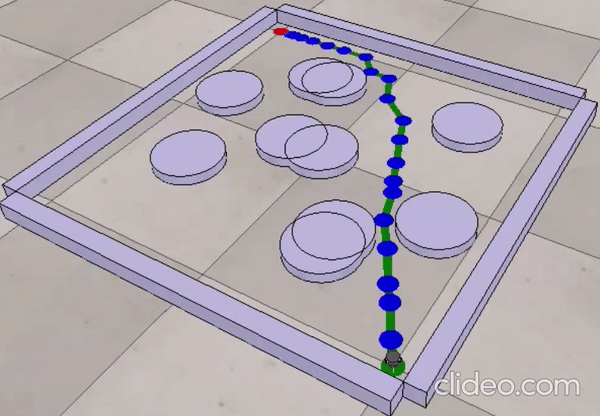

Publications

Souvik Datta, Mangolik Kundu, Ratnadeep Das Choudhury, Sriramalakshmi P and Sreedevi VT
IEEE India Council Subsections Conference (INDISCON), 2022
Paper / IEEE Xplore / Code / Certificate
To ensure timely submission of the issued books, this work develops a "Book-Bot" which solves these complexities. The bot can commute from point A to point B, scan and verify QR Codes and Barcodes. The bot will have a certain payload capacity for carrying books. The QR code and Barcode scanning will be enabled by a Pi Camera, OpenCV and Raspberry Pi, thus making the exchange of books safe and secure. The odometry maneuvers of the bot will be controlled manually via a Blynk App.

Souvik Datta and Sriramalakshmi P.
International Conference on Advances in Energy Research (ICAER), 2022
arXiv / Springer / PPT / Certificate
This research article presents the single phase two stage boost inverter system for wave energy conversion. The boost inverter is used to boost up the voltage availed from the permanent magnet generator powered by a wave energy converter system using zeta converter and then invert it using an H-bridge inverter. Hence variable magnitude AC voltage is converted to constant magnitude AC voltage at constant frequency.

Souvik Datta, R. Bharatwaj, Subbulekshmi D, Deepa T and Angeleshawri S.
International Conference on Data Analytics and Computing (ICDAC), 2022
Abstract / PPT / Certificate
Complex domains have a dense relational structure that can be represented as a graph. Graphs are the new frontier of Deep Learning as they can represent a wide range of real-world data, such as flow networks, social networks, and food webs. The agent learns from its surroundings and determines the best way to the destination.